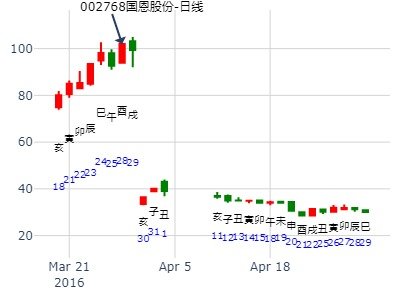
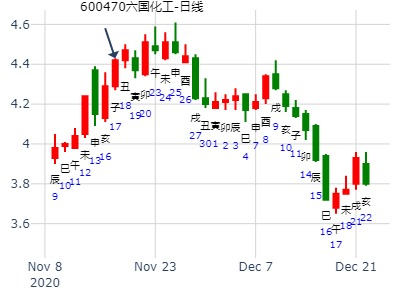

占事: 00489中金黄金2015年走势? 卦主：牛儿兵
公历时间：2015年1月25日17时6分
干支：甲午年丁丑月辛丑日丁酉时 (旬空: 辰巳 )
明夷静卦 (游魂)
腾蛇 ▅▅ ▅▅ 父母酉金
勾陈 ▅▅ ▅▅ 兄弟亥水
朱雀 ▅▅ ▅▅ 官鬼丑土 世
青龙 妻财午火▅▅▅▅▅ 兄弟亥水
玄武 ▅▅ ▅▅ 官鬼丑土
白虎 ▅▅▅▅▅ 子孙卯木 应
午月见最高点。冲高回落卦。
主帖标题: [讨论]股票业绩预测？欢迎出手。
起卦方式：手动摇卦 www.iqing.net 线上排盘系统
公历时间：2006年2月21日22时27分 星期二
农历时间：丙戌年正月廿四亥时
干支：丙戌年 庚寅月 辛巳日 己亥时 (旬空：申酉)
神煞：驿马—亥 桃花—午 日禄—酉 贵人—寅，午
坎宫：地火明夷（游魂）
六神 伏 神 【本 卦】
螣蛇 ▅▅ ▅▅ 父母癸酉金
勾陈 ▅▅ ▅▅ 兄弟癸亥水
朱雀 ▅▅ ▅▅ 官鬼癸丑土 世
青龙 妻财戊午火 ▅▅▅▅▅ 兄弟己亥水
玄武 ▅▅ ▅▅ 官鬼己丑土
白虎 ▅▅▅▅▅ 子孙己卯木 应
我也不知道以什么爻为用。不过明天就知道业绩如何？可以马上印证，在仔细研究。
2月上证行情。明夷静卦。王
时间: 2023-02-01
干支: 壬寅年癸丑月庚寅日 (旬空: 午未 )
明夷静卦 (游魂)
腾蛇 ▅▅ ▅▅ 父母酉金
勾陈 ▅▅ ▅▅ 兄弟亥水
朱雀 ▅▅ ▅▅ 官鬼丑土 世
青龙 妻财午火▅▅▅▅▅ 兄弟亥水
玄武 ▅▅ ▅▅ 官鬼丑土
白虎 ▅▅▅▅▅ 子孙卯木 应
男 占事：002027七喜控股明天涨跌
公历起卦时间：2016年3月8日17时13分 (电脑自动)
干支：丙申年 辛卯月 己丑日 癸酉时 （日空：午未）
坎宫：地火明夷 (游魂) 坎宫：地火明夷 (游魂)
六神 伏神 本 卦 变 卦
勾陈 父母癸酉金 ▅▅ ▅▅ 父母癸酉金 ▅▅ ▅▅
朱雀 兄弟癸亥水 ▅▅ ▅▅ 兄弟癸亥水 ▅▅ ▅▅
青龙 官鬼癸丑土 ▅▅ ▅▅ 世 官鬼癸丑土 ▅▅ ▅▅ 世
玄武 妻财戊午火 兄弟己亥水 ▅▅▅▅▅ 兄弟己亥水 ▅▅▅▅▅
白虎 官鬼己丑土 ▅▅ ▅▅ 官鬼己丑土 ▅▅ ▅▅
腾蛇 子孙己卯木 ▅▅▅▅▅ 应 子孙己卯木 ▅▅▅▅▅ 应
沪深股市今日走势 ：（3月21日）丹霞天然
测沪深股市今日走势 起卦方式：手动摇卦
公历时间：2016年3月21日7时24分
干 支：丙申年 辛卯月 壬寅日 甲辰时
旬 空：辰巳 午未 (辰巳) 寅卯
坎宫：地火明夷（游魂）
六神 伏 神 【本 卦】
白虎 ▄▄ ▄▄ 父母癸酉金
螣蛇 ▄▄ ▄▄ 兄弟癸亥水
勾陈 ▄▄ ▄▄ 官鬼癸丑土 世
朱雀 妻财戊午火 ▄▄▄▄▄ 兄弟己亥水
青龙 ▄▄ ▄▄ 官鬼己丑土
玄武 ▄▄▄▄▄ 子孙己卯木 应
风生水起 占事：国恩股份16.3.28-17.3.27 起卦方式：手动摇卦
公历时间：2016年3月28日14时13分
干 支：丙申年 辛卯月 己酉日 辛未时
旬 空：辰巳 午未 (寅卯) 戌亥
坎宫：地火明夷（游魂）
六神 伏 神 【本 卦】
勾陈 ▄▄ ▄▄ 父母癸酉金
朱雀 ▄▄ ▄▄ 兄弟癸亥水
青龙 ▄▄ ▄▄ 官鬼癸丑土 世
玄武 妻财戊午火 ▄▄▄▄▄ 兄弟己亥水
白虎 ▄▄ ▄▄ 官鬼己丑土
螣蛇 ▄▄▄▄▄ 子孙己卯木 应
明夷风险，很快见顶。


上证3月第1周。风险卦，哪怕短线会涨几天。.md
时间: 2020-03-01
干支: 庚子年戊寅月癸卯日 (旬空: 辰巳 )
明夷静卦
(游魂)
白虎 ▅▅ ▅▅ 父母酉金
腾蛇 ▅▅ ▅▅ 兄弟亥水
勾陈 ▅▅ ▅▅ 官鬼丑土 世
朱雀 妻财午火▅▅▅▅▅ 兄弟亥水
青龙 ▅▅ ▅▅ 官鬼丑土
玄武 ▅▅▅▅▅ 子孙卯木 应
主帖标题: 603956 下午和明天走势
公历起卦时间：2020年3月11日12时40分 (在线摇卦)
干支：庚子年 己卯月 癸丑日 戊午时 （日空：寅卯）
坎宫：地火明夷 (游魂) 坎宫：地火明夷 (游魂)
六神 伏神 本 卦 变 卦
白虎 父母癸酉金 ▅▅ ▅▅ 父母癸酉金 ▅▅ ▅▅
螣蛇 兄弟癸亥水 ▅▅ ▅▅ 兄弟癸亥水 ▅▅ ▅▅
勾陈 官鬼癸丑土 ▅▅ ▅▅ 世 官鬼癸丑土 ▅▅ ▅▅ 世
朱雀 妻财戊午火 兄弟己亥水 ▅▅▅▅▅ 兄弟己亥水 ▅▅▅▅▅
青龙 官鬼己丑土 ▅▅ ▅▅ 官鬼己丑土 ▅▅ ▅▅
玄武 子孙己卯木 ▅▅▅▅▅ 应 子孙己卯木 ▅▅▅▅▅ 应
主帖标题: 3月1至3月5日大盘（日测）
明天周五涨跌
公历时间：2021年3月4日15时58分 农历时间：辛丑年 正月二十一日申时
干 支：辛丑年 庚寅月 辛亥日 丙申时
旬 空：辰巳 午未 寅卯 辰巳
神 煞：驿马─巳 桃花─子 日禄─酉 贵人─寅，午
坎宫：地火明夷（游魂）
六神 伏 神 【本 卦】
螣蛇 ▄▄ ▄▄ 父母癸酉金
勾陈 ▄▄ ▄▄ 兄弟癸亥水
朱雀 ▄▄ ▄▄ 官鬼癸丑土 世
青龙 妻财戊午火 ▄▄▄▄▄ 兄弟己亥水
玄武 ▄▄ ▄▄ 官鬼己丑土
白虎 ▄▄▄▄▄ 子孙己卯木 应

主帖标题: 每日大盘走势
4.23大盘走势?
干支：丁亥年 甲辰月 丙戌日 甲午时 (旬空：午未)
神煞：驿马—申 桃花—卯 日禄—巳 贵人—酉，亥
坎宫：地火明夷（游魂）
六神 伏 神 【本 卦】
青龙 ▅▅ ▅▅ 父母癸酉金
玄武 ▅▅ ▅▅ 兄弟癸亥水
白虎 ▅▅ ▅▅ 官鬼癸丑土 世
螣蛇 妻财戊午火 ▅▅▅▅▅ 兄弟己亥水
勾陈 ▅▅ ▅▅ 官鬼己丑土
朱雀 ▅▅▅▅▅ 子孙己卯木 应 明日大涨!
女 占事：深成指在明天到下周五的走势
公历起卦时间：2015年4月15日21时57分 (手工指定)
干支：乙未年 庚辰月 辛酉日 己亥时 （日空：子丑）
坎宫：地火明夷 (游魂) 坎宫：地火明夷 (游魂)
六神 伏神 本 卦 变 卦
腾蛇 父母癸酉金 ▅▅ ▅▅ 父母癸酉金 ▅▅ ▅▅
勾陈 兄弟癸亥水 ▅▅ ▅▅ 兄弟癸亥水 ▅▅ ▅▅
朱雀 官鬼癸丑土 ▅▅ ▅▅ 世 官鬼癸丑土 ▅▅ ▅▅ 世
青龙 妻财戊午火 兄弟己亥水 ▅▅▅▅▅ 兄弟己亥水 ▅▅▅▅▅
玄武 官鬼己丑土 ▅▅ ▅▅ 官鬼己丑土 ▅▅ ▅▅
白虎 子孙己卯木 ▅▅▅▅▅ 应 子孙己卯木 ▅▅▅▅▅ 应
试测上证2022.5.5收盘个位数是几？
男 占事：没填
公历起卦时间：2022年4月30日7时50分 (电脑自动)
干支：壬寅年 甲辰月 癸丑日 丙辰时 （日空：寅卯）
坎宫：地火明夷 (游魂) 坎宫：地火明夷 (游魂)
六神 伏神 本 卦 变 卦
白虎 父母癸酉金 ▅▅ ▅▅ 父母癸酉金 ▅▅ ▅▅
螣蛇 兄弟癸亥水 ▅▅ ▅▅ 兄弟癸亥水 ▅▅ ▅▅
勾陈 官鬼癸丑土 ▅▅ ▅▅ 世 官鬼癸丑土 ▅▅ ▅▅ 世
朱雀 妻财戊午火 兄弟己亥水 ▅▅▅▅▅ 兄弟己亥水 ▅▅▅▅▅
青龙 官鬼己丑土 ▅▅ ▅▅ 官鬼己丑土 ▅▅ ▅▅
玄武 子孙己卯木 ▅▅▅▅▅ 应 子孙己卯木 ▅▅▅▅▅ 应
主帖标题: 巳月个股月卦收集帖
清净道人 男 占事：601519 5月
公历起卦时间：2022年5月4日17时21分 (在线摇卦)
干支：壬寅年 甲辰月 丁巳日 己酉时 （日空：子丑）
坎宫：地火明夷 (游魂) 坎宫：地火明夷 (游魂)
六神 伏神 本 卦 变 卦
青龙 父母癸酉金 ▅▅ ▅▅ 父母癸酉金 ▅▅ ▅▅
玄武 兄弟癸亥水 ▅▅ ▅▅ 兄弟癸亥水 ▅▅ ▅▅
白虎 官鬼癸丑土 ▅▅ ▅▅ 世 官鬼癸丑土 ▅▅ ▅▅ 世
螣蛇 妻财戊午火 兄弟己亥水 ▅▅▅▅▅ 兄弟己亥水 ▅▅▅▅▅
勾陈 官鬼己丑土 ▅▅ ▅▅ 官鬼己丑土 ▅▅ ▅▅
朱雀 子孙己卯木 ▅▅▅▅▅ 应 子孙己卯木 ▅▅▅▅▅ 应
测600313农发种业在2022年6月份走势
公历起卦时间：2022年5月31日18时4分 (手工指定)
干支：壬寅年 乙巳月 甲申日 癸酉时 （日空：午未）
坎宫：地火明夷 (游魂) 坎宫：地火明夷 (游魂)
六神 伏神 本 卦 变 卦
玄武 父母癸酉金 ▅▅ ▅▅ 父母癸酉金 ▅▅ ▅▅
白虎 兄弟癸亥水 ▅▅ ▅▅ 兄弟癸亥水 ▅▅ ▅▅
螣蛇 官鬼癸丑土 ▅▅ ▅▅ 世 官鬼癸丑土 ▅▅ ▅▅ 世
勾陈 妻财戊午火 兄弟己亥水 ▅▅▅▅▅ 兄弟己亥水 ▅▅▅▅▅
朱雀 官鬼己丑土 ▅▅ ▅▅ 官鬼己丑土 ▅▅ ▅▅
青龙 子孙己卯木 ▅▅▅▅▅ 应 子孙己卯木 ▅▅▅▅▅ 应
阿晖钱币卦 121222
海通证通午月走势？ 地火明夷静卦。 风险卦。午爻午月午日旺极见顶。.md
公历起卦时间：2015年6月11日9时32分
干支：乙未年 壬午月 戊午日 丁巳时 （日空：子丑）
坎宫：地火明夷 (游魂) 坎宫：地火明夷 (游魂)
六神 伏神 本 卦 变 卦
朱雀 父母癸酉金 ▅▅ ▅▅ 父母癸酉金 ▅▅ ▅▅
青龙 兄弟癸亥水 ▅▅ ▅▅ 兄弟癸亥水 ▅▅ ▅▅
玄武 官鬼癸丑土 ▅▅ ▅▅ 世 官鬼癸丑土 ▅▅ ▅▅ 世
白虎 妻财戊午火 兄弟己亥水 ▅▅▅▅▅ 兄弟己亥水 ▅▅▅▅▅
腾蛇 官鬼己丑土 ▅▅ ▅▅ 官鬼己丑土 ▅▅ ▅▅
勾陈 子孙己卯木 ▅▅▅▅▅ 应 子孙己卯木 ▅▅▅▅▅ 应
主帖标题: 最好是预测蓄势充分,长期威廉进入强势初期且题材好的股
300049福瑞股份
起卦公历：2021年6月8日19时0分(北京时间)
干支： 辛丑年 甲午月 丁亥日 庚戌时 (卦身：酉)
主变卦 地火明夷(坎宫-游魂) [空亡:午、未]
青龙 ━ ━ 父母酉金
玄武 ━ ━ 兄弟亥水
白虎 ━ ━ 官鬼丑土 世
螣蛇 ━━━ 兄弟亥水
勾陈 ━ ━ 官鬼丑土
朱雀 ━━━ 子孙卯木 应
这支股票6月10号调整完毕，从周五开始来个三级跳。
11：15分起卦，远致当归卜问掌趣科技下周走势？
1花，2花，1花，2花，2花，2花 -地火明夷。
占事：掌趣科技下周走势？
公历时间：2015年7月17日11时20分
干 支：乙未年 癸未月 甲午日 庚午时
旬 空：辰巳 申酉 (辰巳) 戌亥
坎宫：地火明夷（游魂）
六神 伏 神 【本 卦】
玄武 ▄▄ ▄▄ 父母癸酉金
白虎 ▄▄ ▄▄ 兄弟癸亥水
螣蛇 ▄▄ ▄▄ 官鬼癸丑土 世
勾陈 妻财戊午火 ▄▄▄▄▄ 兄弟己亥水
朱雀 ▄▄ ▄▄ 官鬼己丑土
青龙 ▄▄▄▄▄ 子孙己卯木 应
易情股恋--公历时间：2015年7月27日4时20分
干 支：乙未年 癸未月 甲辰日 丙寅时
旬 空：辰巳 申酉 (寅卯) 戌亥
坎宫：地火明夷（游魂）
六神 伏 神 【本 卦】
玄武 ▄▄ ▄▄ 父母癸酉金
白虎 ▄▄ ▄▄ 兄弟癸亥水
螣蛇 ▄▄ ▄▄ 官鬼癸丑土 世
勾陈 妻财戊午火 ▄▄▄▄▄ 兄弟己亥水
朱雀 ▄▄ ▄▄ 官鬼己丑土
青龙 ▄▄▄▄▄ 子孙己卯木 应 |
主帖标题: 上证本周走势 （2016年7月4-11日）
占事：上证本周走势
公历起卦时间：2016年7月3日14时6分
干支：丙申年 甲午月 丙戌日 乙未时 （日空：午未）
坎宫：地火明夷 (游魂)
六神 伏神 本 卦
青龙 父母癸酉金 ▅▅ ▅▅
玄武 兄弟癸亥水 ▅▅ ▅▅
白虎 官鬼癸丑土 ▅▅ ▅▅ 世
腾蛇 妻财戊午火 兄弟己亥水 ▅▅▅▅▅
勾陈 官鬼己丑土 ▅▅ ▅▅
朱雀 子孙己卯木 ▅▅▅▅▅ 应 
主帖标题: 持有个股今年何时见顶？
占事:WLDQBSKA 下周一7.13-7.24日哪天是最高点？
起卦方式：TQ手动摇卦 (周易世界 www.zhouyiworld.com)
公历时间：2020年7月12日12时59分
干 支：庚子年 癸未月 丙辰日 甲午时
旬 空：辰巳 申酉 子丑 辰巳
神 煞：驿马─寅 桃花─酉 日禄─巳 贵人─酉，
坎宫：地火明夷（游魂）
六神 伏 神 【本 卦】
青龙 ▄▄ ▄▄ 父母癸酉金
玄武 ▄▄ ▄▄ 兄弟癸亥水
白虎 ▄▄ ▄▄ 官鬼癸丑土 世
螣蛇 妻财戊午火 ▄▄▄▄▄ 兄弟己亥水
勾陈 ▄▄ ▄▄ 官鬼己丑土
朱雀 ▄▄▄▄▄ 子孙己卯木 应
占事: 下周上证涨跌 提供：玩易斋主人
起卦方式：手工指定 周易天地www.64gua.com六爻线上排盘系统
公历时间：2009年8月14日9时44分
干支：己丑年 壬申月 辛卯日 癸巳时 旬空：午未 戌亥 午未 午未
坎宫：地火明夷（游魂）
六神 伏 神 【本 卦】
螣蛇 ▄▄ ▄▄ 父母癸酉金
勾陈 ▄▄ ▄▄ 兄弟癸亥水
朱雀 ▄▄ ▄▄ 官鬼癸丑土 世
青龙 妻财戊午火 ▄▄▄▄▄ 兄弟己亥水
玄武 ▄▄ ▄▄ 官鬼己丑土
白虎 ▄▄▄▄▄ 子孙己卯木 应
下周大盘走势
公历起卦时间：2014年8月1日15时51分
干支：甲午年 辛未月 甲辰日 壬申时 （日空：寅卯）
坎宫：地火明夷 (游魂) 坎宫：地火明夷 (游魂)
六神 伏神 本 卦 变 卦
玄武 父母癸酉金 ▅▅ ▅▅ 父母癸酉金 ▅▅ ▅▅
白虎 兄弟癸亥水 ▅▅ ▅▅ 兄弟癸亥水 ▅▅ ▅▅
腾蛇 官鬼癸丑土 ▅▅ ▅▅ 世 官鬼癸丑土 ▅▅ ▅▅ 世
勾陈 妻财戊午火 兄弟己亥水 ▅▅▅▅▅ 兄弟己亥水 ▅▅▅▅▅
朱雀 官鬼己丑土 ▅▅ ▅▅ 官鬼己丑土 ▅▅ ▅▅
青龙 子孙己卯木 ▅▅▅▅▅ 应 子孙己卯木 ▅▅▅▅▅ 应
主帖标题: 主题：青山纸业[600103]近几天走势？
主题：明天早晨买入青山纸业[600103]能否得财？
丁亥 戊申 庚子 乙酉 (辰巳空) 丁亥年七月廿二(2007/09/03 17:16:36)
时间: 2007-09-03
干支: 丁亥年戊申月庚子日 (旬空: 辰巳 )
明夷静卦(游魂)
腾蛇 ▅▅ ▅▅ 父母酉金
勾陈 ▅▅ ▅▅ 兄弟亥水
朱雀 ▅▅ ▅▅ 官鬼丑土 世
青龙 妻财午火▅▅▅▅▅ 兄弟亥水
玄武 ▅▅ ▅▅ 官鬼丑土
白虎 ▅▅▅▅▅ 子孙卯木 应
主帖标题: 第９期预测上证指数比赛９月１6日到１９日
公历时间：2008年9月16日9时30分 星期二
农历时间：戊子年八月十七日巳时
干支：戊子年 辛酉月 己未日 己巳时 (旬空：子丑)
神煞：驿马—巳 桃花—子 日禄—午 贵人—子，申
坎宫：地火明夷（游魂）
六神 伏 神 【本 卦】
朱雀 ▅▅ ▅▅ 父母癸酉金
青龙 ▅▅ ▅▅ 兄弟癸亥水
玄武 ▅▅ ▅▅ 官鬼癸丑土 世
白虎 妻财戊午火 ▅▅▅▅▅ 兄弟己亥水
螣蛇 ▅▅ ▅▅ 官鬼己丑土
勾陈 ▅▅▅▅▅ 子孙己卯木 应
这是大盘日Ｋ线演化的信息时间！
主帖标题: 2010年10月大盘涨跌卦
占事：2010年10月大盘涨跌？
公历时间：2010年9月30日16时47分 星期四
农历时间：庚寅年八月廿三申时
干支：庚寅年 乙酉月 癸未日 庚申时 (旬空：申酉)
神煞：驿马—巳 桃花—子 日禄—子 贵人—卯，巳
坎宫：地火明夷（游魂）
六神 伏 神 【本 卦】
白虎 ▅▅ ▅▅ 父母癸酉金
螣蛇 ▅▅ ▅▅ 兄弟癸亥水
勾陈 ▅▅ ▅▅ 官鬼癸丑土 世
朱雀 妻财戊午火 ▅▅▅▅▅ 兄弟己亥水
青龙 ▅▅ ▅▅ 官鬼己丑土
玄武 ▅▅▅▅▅ 子孙己卯木 应
下周18日丁酉止，上证指数
起卦时间:2015年9月11日5时55分
时间: 2015-09-11
干支: 乙未年乙酉月庚寅日 (旬空: 午未 )
明夷静卦(游魂)
腾蛇 ▅▅ ▅▅ 父母酉金
勾陈 ▅▅ ▅▅ 兄弟亥水
朱雀 ▅▅ ▅▅ 官鬼丑土 世
青龙 ▅▅▅▅▅ 兄弟亥水
玄武 ▅▅ ▅▅ 官鬼丑土
白虎 ▅▅▅▅▅ 子孙卯木 应
利艰贞。
主帖标题: 与道友一起发财，本人付费机构荐股十四
老大辛苦，为表感谢，后续跟上个股测挂。各位也别光看，一起研究一下，争取利润最大化
起卦公历：2009年10月22日12时24分(北京时间)。
起卦农历：己丑年 九月 初五日 午时。
干支： 己丑年 甲戌月 庚子日 壬午时 (卦身：酉)
主变卦 地火明夷(坎宫-游魂) [空亡:辰、巳]
螣蛇 ━ ━ 父母酉金
勾陈 ━ ━ 兄弟亥水
朱雀 ━ ━ 官鬼丑土 世
青龙 妻财午火 ━━━ 兄弟亥水
玄武 ━ ━ 官鬼丑土
白虎 ━━━ 子孙卯木 应
丑日、辰日，官旺，开始启动。巳午日大涨，获利了解。
水平所限仅供参考。补充一句，明夷未必一番风顺
注：此贴无股票名，仅以大盘替代，仅供参考。
主帖标题: 2013年11月大盘涨跌卦
占事：2013年11月大盘涨跌？
公历起卦时间：2013年10月31日15时1分 (手工指定)
干支：癸巳年 壬戌月 庚午日 甲申时 （日空：戌亥）
神煞：驿马－申 桃花－卯 日禄－申 贵人－丑，未
坎宫：地火明夷 (游魂) 坎宫：地火明夷 (游魂)
六神 伏神 本 卦 变 卦
腾蛇 父母癸酉金 ▅▅ ▅▅ 父母癸酉金 ▅▅ ▅▅
勾陈 兄弟癸亥水 ▅▅ ▅▅ 兄弟癸亥水 ▅▅ ▅▅
朱雀 官鬼癸丑土 ▅▅ ▅▅ 世 官鬼癸丑土 ▅▅ ▅▅ 世
青龙 妻财戊午火 兄弟己亥水 ▅▅▅▅▅ 兄弟己亥水 ▅▅▅▅▅
玄武 官鬼己丑土 ▅▅ ▅▅ 官鬼己丑土 ▅▅ ▅▅
白虎 子孙己卯木 ▅▅▅▅▅ 应 子孙己卯木 ▅▅▅▅▅ 应
主帖标题: 特变电工10.13三收盘走势
公历起卦时间：2021年10月13日9时45分 (电脑自动)
干支：辛丑年 戊戌月 甲午日 己巳时 （日空：辰巳）
坎宫：地火明夷 (游魂) 坎宫：地火明夷 (游魂)
六神 伏神 本 卦 变 卦
玄武 父母癸酉金 ▅▅ ▅▅ 父母癸酉金 ▅▅ ▅▅
白虎 兄弟癸亥水 ▅▅ ▅▅ 兄弟癸亥水 ▅▅ ▅▅
螣蛇 官鬼癸丑土 ▅▅ ▅▅ 世 官鬼癸丑土 ▅▅ ▅▅ 世
勾陈 妻财戊午火 兄弟己亥水 ▅▅▅▅▅ 兄弟己亥水 ▅▅▅▅▅
朱雀 官鬼己丑土 ▅▅ ▅▅ 官鬼己丑土 ▅▅ ▅▅
青龙 子孙己卯木 ▅▅▅▅▅ 应 子孙己卯木 ▅▅▅▅▅ 应
长安汽车啥时会涨？
公历起卦时间：2016年11月4日22时4分 (在线摇卦)
干支：丙申年 戊戌月 庚寅日 丁亥时 （日空：午未）
坎宫：地火明夷 (游魂) 坎宫：地火明夷 (游魂)
六神 伏神 本 卦 变 卦
腾蛇 父母癸酉金 ▅▅ ▅▅ 父母癸酉金 ▅▅ ▅▅
勾陈 兄弟癸亥水 ▅▅ ▅▅ 兄弟癸亥水 ▅▅ ▅▅
朱雀 官鬼癸丑土 ▅▅ ▅▅ 世 官鬼癸丑土 ▅▅ ▅▅ 世
青龙 妻财戊午火 兄弟己亥水 ▅▅▅▅▅ 兄弟己亥水 ▅▅▅▅▅
玄武 官鬼己丑土 ▅▅ ▅▅ 官鬼己丑土 ▅▅ ▅▅
白虎 子孙己卯木 ▅▅▅▅▅ 应 子孙己卯木 ▅▅▅▅▅ 应
求测事情：600470
公历：2020-11-17 07:13
农历：2020年10月03日 甲子旬 戌亥空
庚子年丁亥月甲子日戊辰时
神煞：驿马-寅 桃花-酉 日禄-寅 贵人-丑,未
地火明夷(坎宫 )
▄▄ ▄▄癸酉金父母 玄武
▄▄ ▄▄癸亥水兄弟 白虎
世▄▄ ▄▄癸丑土官鬼 滕蛇
▄▄▄▄▄己亥水兄弟 勾陈
▄▄ ▄▄己丑土官鬼 朱雀
应▄▄▄▄▄己卯木子孙 青龙

主帖标题: 2021年第48周 11月22至11月26日个股300491和600031预测汇总
2021年第48周 11月22至11月26日个股300491预测
公历时间：2021年11月19日16时2分 农历时间：辛丑年 十月十五日申时
干 支：辛丑年 己亥月 辛未日 丙申时
旬 空：辰巳 辰巳 戌亥 辰巳
神 煞：驿马─巳 桃花─子 日禄─酉 贵人─寅，午
坎宫：地火明夷（游魂）
六神 伏 神 【本 卦】
螣蛇 ▄▄ ▄▄ 父母癸酉金
勾陈 ▄▄ ▄▄ 兄弟癸亥水
朱雀 ▄▄ ▄▄ 官鬼癸丑土 世
青龙 妻财戊午火 ▄▄▄▄▄ 兄弟己亥水
玄武 ▄▄ ▄▄ 官鬼己丑土
白虎 ▄▄▄▄▄ 子孙己卯木 应
周跌。一二四涨，三五跌，。。。。。涨，涨，跌，涨，跌，，，，周跌
中国银行12月2-4日——乾隆币卦
中国银行本周3天走势
公历时间：2015年12月2日14时50分
干 支：乙未年 丁亥月 壬子日 丁未时
旬 空：辰巳 午未 (寅卯) 寅卯
坎宫：地火明夷（游魂）
六神 伏 神 【本 卦】
白虎 ▄▄ ▄▄ 父母癸酉金
螣蛇 ▄▄ ▄▄ 兄弟癸亥水
勾陈 ▄▄ ▄▄ 官鬼癸丑土 世
朱雀 妻财戊午火 ▄▄▄▄▄ 兄弟己亥水
青龙 ▄▄ ▄▄ 官鬼己丑土
玄武 ▄▄▄▄▄ 子孙己卯木 应 |

主帖标题: 今日一股…腾达建设，快去摇卦/尚易君原创
当日涨跌手摇卦
姓名： 出生年:1981 性别：男 占事：
起卦方式：手动摇卦 中国预测网六爻排盘
公历时间：2019年12月3日10时1分
干 支：己亥年 乙亥月 甲戌日 己巳时
旬 空：辰巳 申酉 申酉 戌亥
神 煞：驿马─申 桃花─卯 日禄─寅 贵人─丑，未
坎宫：地火明夷（游魂）
六神 伏 神 【本 卦】
玄武 ▄▄ ▄▄ 父母癸酉金
白虎 ▄▄ ▄▄ 兄弟癸亥水
螣蛇 ▄▄ ▄▄ 官鬼癸丑土 世
勾陈 妻财戊午火 ▄▄▄▄▄ 兄弟己亥水
朱雀 ▄▄ ▄▄ 官鬼己丑土
青龙 ▄▄▄▄▄ 子孙己卯木 应